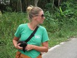
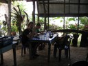
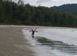

Resor · 2010-11-30 @ 12:03:32 Allmänt Permalink
Koh Lanta Noi
Min dykväska har möglat!
En dykväska som är fuktkänslig. Konstigt.
Den har stått i mitt rum en månad, nu är den vitprickig, Och necessären som tillhör, och hänger i badrummet, är prickig också.
Nu har jag fixat en textrad på thai från Google translate, där jag vill ha sprit eller klorin att tvätta med.
En thaikille rättade texten lite, det blev visst att jag ville dricka sprit och klorin :-)
En dag i butiken. Bokat, sålt, inventerat, fixat lite formulär, städat. Jag trivs. Smällen när alla kommer samtidigt kl 17-20 går bättre och bättre!
---
Jag blev inhoppare på snorkelbåten på måndag. 4-islands söder om Koh Lanta.
Det är kul och skönt att vara ute och åka, prata med folk, släpa runt folk på en livboj och peka på saker i vattnet. "Emerald cave" fortsätter också att vara ett häftigt ställe att simma in på.
---
December, redan! I dag är jag ledig igen, funderar på att åka till norra Lanta och titta runt, det verkar lite mer landsbyggd där.
---
Fick med mig Agneta och Simon :-)
Vi tog moppefärjan över, det är en liten longtailbåt, vinglig och skruttig. Jag la mobil och allt i en drybag innan, så mycket litade jag på den båten! Sen körde vi bortsidan runt Lanta Noi på en lång rätt oanvänd asfaltsväg. Vi körde sakta och det var spännande att se palmoljeträd, gummiplantage och lite vanlig landsbyggd.
Sen gick hon och letade efter modern. Byborna tyckte hon kunde ta med sig katten. Efter en halvtimme släpptes den äntligen på en gård där det fanns andra kattungar. Nåja.
Klart att moppen dog och stranden blev mjuk. Sista 500m släpade vi oss med tunga moppar i lös sand :-(
Med en kvist pillade jag bort sand runt tändstiftet och kom igång igen :-)
En dykväska som är fuktkänslig. Konstigt.
Den har stått i mitt rum en månad, nu är den vitprickig, Och necessären som tillhör, och hänger i badrummet, är prickig också.
Nu har jag fixat en textrad på thai från Google translate, där jag vill ha sprit eller klorin att tvätta med.
En thaikille rättade texten lite, det blev visst att jag ville dricka sprit och klorin :-)
En dag i butiken. Bokat, sålt, inventerat, fixat lite formulär, städat. Jag trivs. Smällen när alla kommer samtidigt kl 17-20 går bättre och bättre!
---
Jag blev inhoppare på snorkelbåten på måndag. 4-islands söder om Koh Lanta.
Det är kul och skönt att vara ute och åka, prata med folk, släpa runt folk på en livboj och peka på saker i vattnet. "Emerald cave" fortsätter också att vara ett häftigt ställe att simma in på.
---
December, redan! I dag är jag ledig igen, funderar på att åka till norra Lanta och titta runt, det verkar lite mer landsbyggd där.
---
Fick med mig Agneta och Simon :-)
Vi tog moppefärjan över, det är en liten longtailbåt, vinglig och skruttig. Jag la mobil och allt i en drybag innan, så mycket litade jag på den båten! Sen körde vi bortsidan runt Lanta Noi på en lång rätt oanvänd asfaltsväg. Vi körde sakta och det var spännande att se palmoljeträd, gummiplantage och lite vanlig landsbyggd.


Agneta stannade och tog upp en kattunge…

Långt ner på ön, där de inte var så vana vid turister åt vi lite mat och på vägen hem körde vi längs stranden med vattnet sprutande i vattenbrynet, härligt. Önskar bara det vore en häst istället.Klart att moppen dog och stranden blev mjuk. Sista 500m släpade vi oss med tunga moppar i lös sand :-(
Med en kvist pillade jag bort sand runt tändstiftet och kom igång igen :-)


Det hängde ett konstigt moln med nån sorts knott vid ett hus...